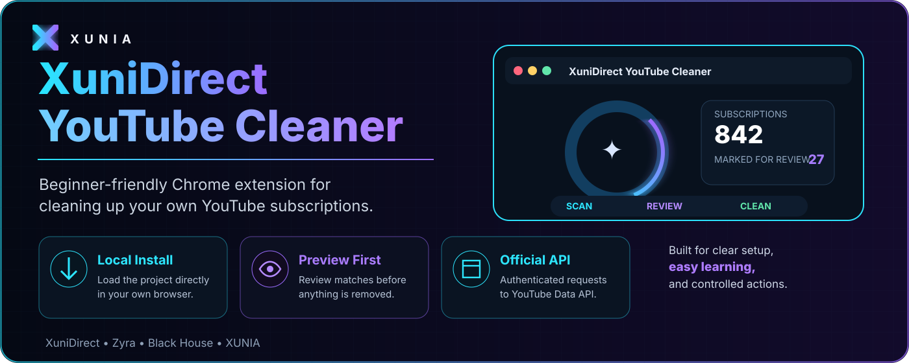
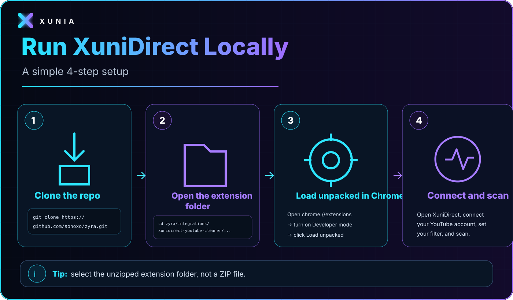
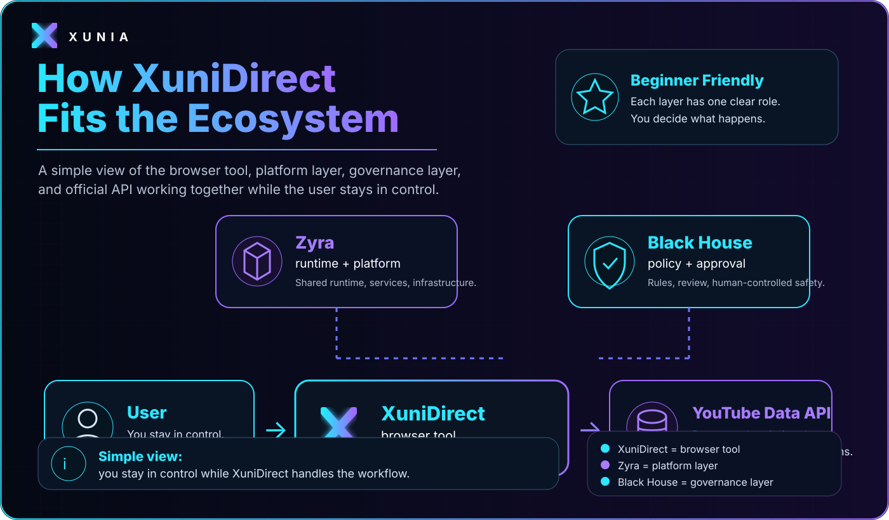

Clone
Copy the repo to your Mac.
XuniDirect helps you scan your own subscriptions, filter by date or channel name, preview exactly what matches, and explicitly confirm before anything is unfollowed.

You do not need to understand the whole codebase. Start with four concepts: the extension folder, manifest.json, Chrome Developer mode, and the XuniDirect popup.
Copy the repo to your Mac.
Go to the XuniDirect extension folder.
Use Chrome → Extensions → Load unpacked.
Connect, choose a filter, preview, then act.
The extension is intentionally simple: it manages the authenticated user’s own YouTube subscriptions using the official YouTube Data API.
This is the path to use when you want to test XuniDirect directly from the repository.

git clone https://github.com/sonoxo/zyra.gitcd zyra/integrations/xunidirect-youtube-cleaner/chrome-web-store/extensionopen .chrome://extensions, click Load unpacked and select the actual extension folder — not a ZIP file.XuniDirect is the browser tool. Zyra is the platform layer. Black House is the project governance layer. The official YouTube Data API handles the external subscription data and confirmed actions.

The Git repository is the source of truth. This page is designed to make that source understandable before you touch the code.